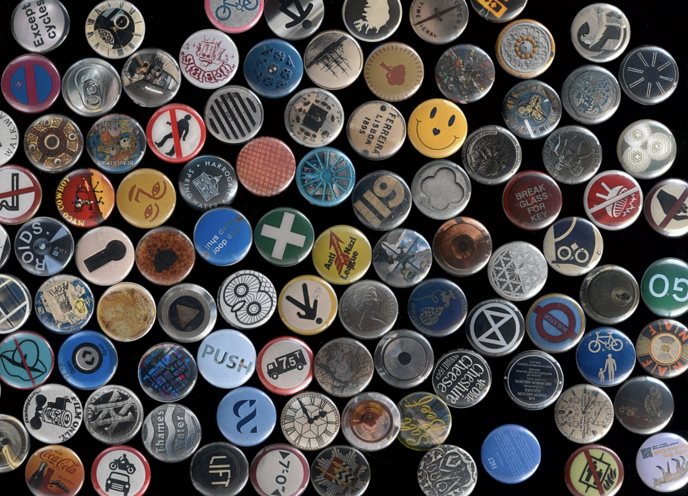

London Circles
A collection of over 100 circles found around london. Turned into 2 books and hand pressed buttons.
CADC Silver Award, 2023



A collection of over 100 circles found around london. Turned into 2 books and hand pressed buttons.
CADC Silver Award, 2023